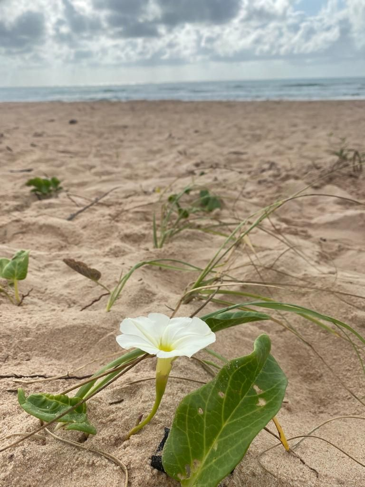
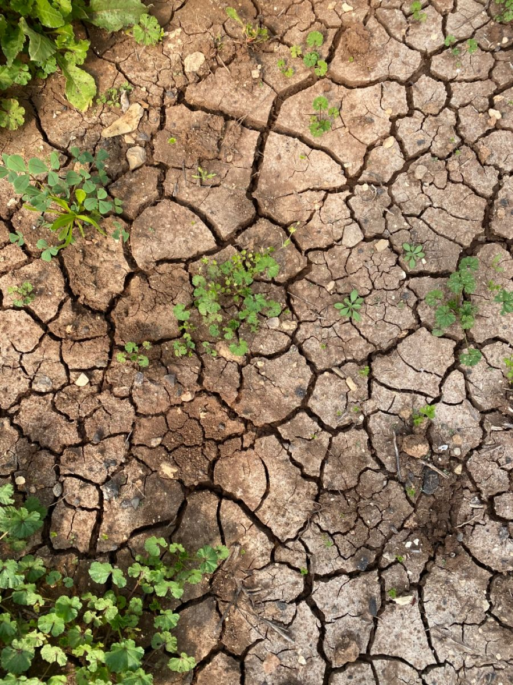
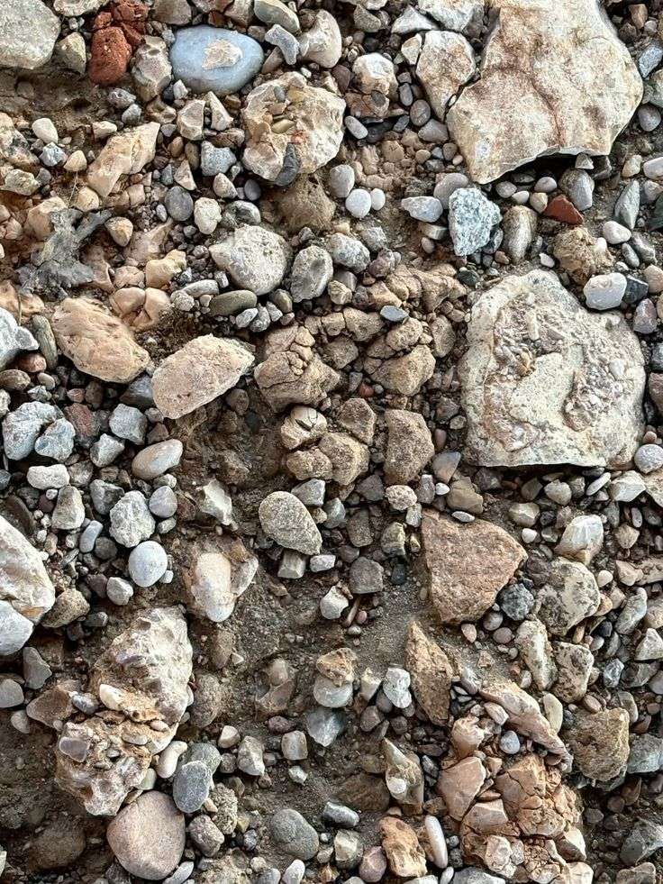
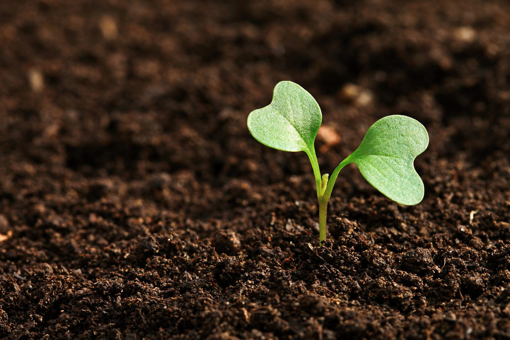

Dia Mundial da preservação do solo

Possui boa drenagem, mas baixa retenção de nutrientes.

Rico em nutrientes e com alta retenção de água.

Rico em cálcio, comum em regiões mais secas.

Rico em matéria orgânica, ideal para cultivo.
O solo é um recurso essencial para a vida no planeta, sendo fundamental para a produção de alimentos, o equilíbrio dos ecossistemas e a manutenção da biodiversidade. Existem diferentes tipos de solo, cada um com características próprias, como textura, composição e capacidade de retenção de água. Compreender essas diferenças é importante para a agricultura, preservação ambiental e uso sustentável dos recursos naturais, garantindo um futuro mais equilibrado para o meio ambiente e a sociedade.